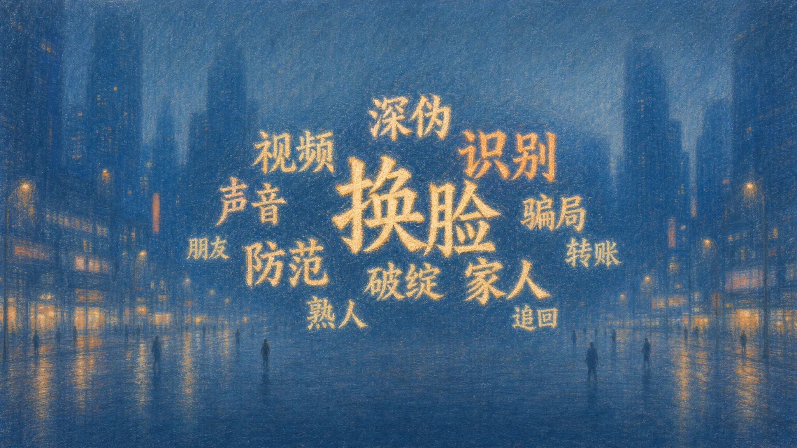
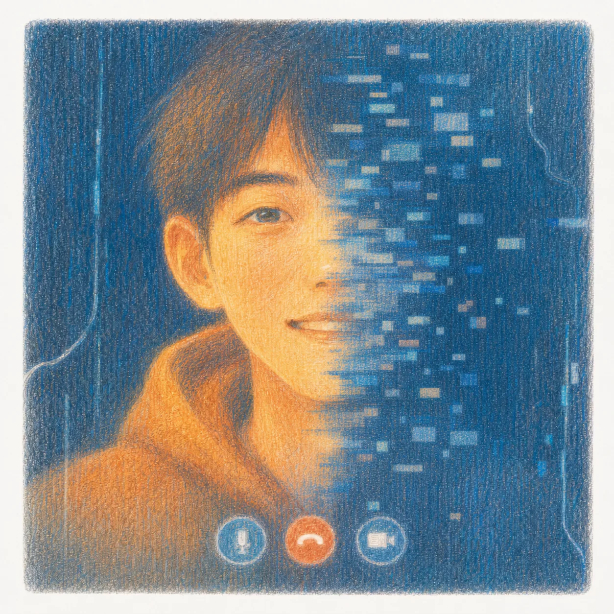

01当数据成为诈骗素材
一段旧影像，
伪装成一场新会议。
香港警方认为，诈骗者下载公司人物在网上公开的影像与声音，经过深度伪造处理，制作了会议内容。
这是该案披露的素材路径，不代表所有案件的技术实现。
在其他公开案例中，这类诈骗视频通话也可以实时互动。骗子可利用人脸、声纹等数据合成画面与声音，并结合行为习惯、双方关系等信息，让冒充更具迷惑性。
山东商河 · 2023年5月底
冯某收到“表哥”的私信，加了对方的 QQ。视频接通了 7 秒，他认出了熟悉的长相和声音。
对方说网络不好，转为打字。他称自己的账户转款不方便，承诺先给冯某转 65 万元，再请冯某转给指定账户。随后，一张写着冯某姓名和账号的转款截图发来了。
冯某查了银行卡，并未到账。等了约 20 分钟，对方解释是大额转款有延迟，又催他先垫付。冯某犹豫了。
对方再次主动打来视频。冯某又认出了那张脸，便向朋友借钱，垫付并转出了 30 万元。他转出去的是借来的钱，并非对方实际汇来的钱。
对方继续催要剩下的 35 万元，冯某又发现对方账号已将自己屏蔽。他拨通真正表哥的电话，这才发现被骗，随后报警。
警方追回了部分钱款。根据央视《焦点访谈》2023 年 7 月 15 日报道整理。阅读来源 ↗
一张熟脸，
带着情分，
也带着权限。
正在显示全部 24 起案例
24 起公开案例*里，被冒充者有亲人、旧识，也有能调动公司资金的领导。认出一个人，有时也被当作收到了一份授权。
* 案例来源：截至2026年9月7日，中国大陆境内公开审理的本类型案件
案例与来源 ↓
滑过关系或光点，左右同步高亮 · 点击光点查看案例
这是知乎上一则标题的疑问。
小红书上的另一个问题已经落在付款之后：
我们从小红书、抖音、知乎、微博，收集了 60 条 AI 诈骗相关的公开标题。*
其中只有 11 条标题谈到了识别真假。
知道 AI 诈骗，不等于意识到熟脸也需要核验。
这组标题中，辨认真假的讨论相对有限。本文希望补上对“熟人也可能被冒用”的警觉：帮助读者理解熟悉的脸如何推动付款，让独立核验成为转账前的习惯。

点击词语，查看平台原题 ↗
网上公开的影像
公开声音素材
预录内容正在播放该案中没有实际互动
约 2 亿 港元该案披露的损失
* 阿杰为 AI 生成的机制示意人像，不对应案件当事人。
继续向下阅读，画面随步骤变化 ↓
香港警方认为，诈骗者下载公司人物在网上公开的影像与声音，经过深度伪造处理，制作了会议内容。
这是该案披露的素材路径，不代表所有案件的技术实现。
在其他公开案例中，这类诈骗视频通话也可以实时互动。骗子可利用人脸、声纹等数据合成画面与声音，并结合行为习惯、双方关系等信息，让冒充更具迷惑性。
香港特区政府披露，这场会议为预录内容，双方没有实际互动。“正在视频”与“正在实时回应”，并不是同一件事。
熟悉的职务与面孔让会议显得可信。画面关闭后，员工仍收到即时通信软件发来的付款指令。
技术提供了可见的身份，组织关系则让指令有了分量。
员工随后授权向 5 个本地银行账户转款，损失约 2 亿港元。画面所确认的身份，越过了交易与账户核验。
“现在就要。”
因为现实身份，他不敢犹豫，不曾怀疑。
催促，让人来不及确认；
保密，限制向他人求证；
假凭证、假文件，让付款理由看似可信。
点击类别，查看对应的浅金档案
24 起案例样本*
浅金突出：紧急 / 保密话术
每张档案代表 1 起样本 · 鼠标停留查看案情与来源
案例数据暂未加载，请刷新页面后重试。
付款前保持疑问，核实本人、业务和账户，
出现异常后，由银行与警方接续处置。
向下阅读，或点击节点跳转 ↓
转账前 · 建议的核验动作
结束当前通话，通过原先保存的联系方式确认。新的号码或对方临时给出的“联系人”，仍可能属于同一套说法。
转账前 · 向第三方求证
通过原先保存的联系方式，向相关亲友、同事或部门核对借款事由、授权与付款安排。紧急或保密的要求，不应让经办人失去暂停和求证的余地。
转账前 · 交易核验建议
把付款用途、实际到账和收款账户分别核对。对方发来的转款截图，不能替代自己账户中的真实交易记录。
转账后 · 处置建议
发现被骗后，立即联系银行并报案，提供交易记录、收款账户和联系信息。能否止付或追回，取决于资金流转及实际处置。
转账后 · 已发生的警银行动
个人已经很难独自追踪后续账户。银行、警方以及跨地区协作，承担继续查找、止付与扣押的任务。
当前查看：核实本人
福州案 · 430 万元转出后的处置336.84 万元被及时拦截
人们对亲友、同事的天然信赖，构筑了稳定可靠的社会关系。若防骗只能依靠对熟悉的脸保持戒备，那么远程联系技术的发展，反而会加重信任的负担。
技术与制度需要共同创造的，是让一笔异常付款仍有被核实、被拦下的机会，让人们可以继续信任彼此，而不必独自承担这份信任被冒用的全部风险。

AI时代，可能充满虚假人与人之间的信任应该被我们的社会托住